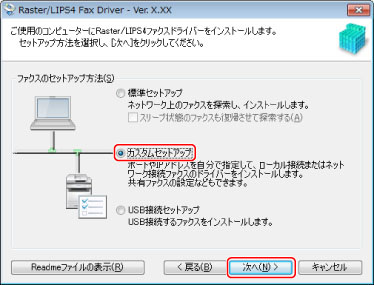
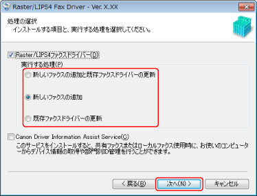
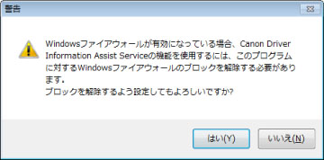
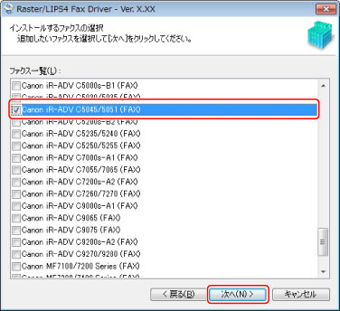
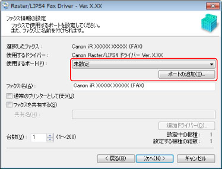
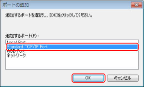
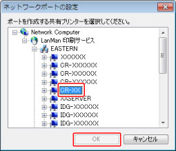
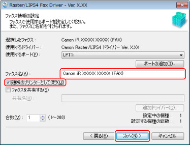
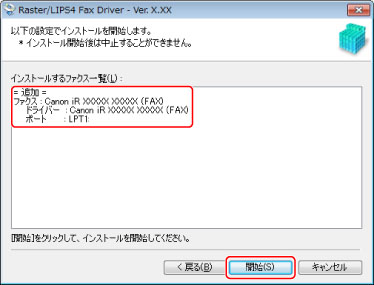
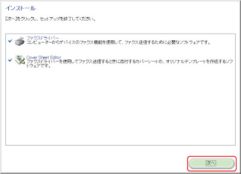

ネットワーク接続またはローカル接続されているデバイスで使用するポートを設定して、ドライバーをインストールします。既存のポートを使用するほかに、標準TCP/IPポートやネットワークプリンター用ポートを追加することもできます。
|
重要
|
|
コンピューターを起動した際に、必ずAdministratorsのメンバーとしてログオンしてください。
お使いのデバイスにオプション外付けのプリントサーバーユニットを接続している場合、ポート選択後、各ポートで以下のキューを指定する必要があります。
LPRの場合
Windows TCP/IP の場合は、［キュー名］欄にPrint、Hold、Directのキュー名を入力 してください。
RAWの場合
ポート番号は9100、9101、9102、9103の4つに対応しています。
9100: Print、Hold、Directのいずれか
9101: Directキューが指定されます
9102: Printキューが指定されます
9103: Holdキューが指定されます
SMBの場合
Networkツリーからデバイスを選択すると、3つのキューが表示されますので、その中からいずれかを選択してください。
NetWareの場合
お使いの機種によっては、バナーの設定はOFFにしてください。
|
|
メモ
|
TCP/IPネットワーク環境の場合、デバイスを自動検索して簡単にインストールできます。（→「 ネットワーク接続」） |
1.
インストーラーを起動 → 画面の指示に従って進む
「
ネットワーク接続」手順1～3を参照してください。
［カスタムセットアップ］を選択 → ［次へ］をクリック

3.
必要に応じて項目を選択 → ［次へ］をクリック

［実行する処理］：すでにドライバーがインストールされている場合に表示されます。必要に応じて、既存のドライバーに対する処理を選択します。
［Canon Driver Information Assist Service］：このサービスがインストールされていない場合に表示されます。共有プリンター環境で、デバイスの情報取得、および部門管理機能を使用するとき、プリントサーバーにこのサービスをインストールします。
以下の画面が表示されたときは、［はい］または［いいえ］をクリックします。

［はい］：Canon Driver Information Assist Serviceに対するWindowsファイアウォールのブロックが解除され、デバイス情報取得や部門管理を行えるようになります。
［いいえ］：Canon Driver Information Assist Serviceは使用できなくなります。
［ファクス一覧］からインストールするデバイスを選択 → ［次へ］をクリック

5.
ポートを設定

複数のデバイスを選択した場合、デバイスごとに上記の画面が表示されて、異なるポートを選択できます。
|
メモ
|
|
NetwareまたはIPPに対応していない機種をお使いの場合は、LPR、RAW、SMBのみ選択できます。
|
|
メモ
|
ポートの設定方法が分からない場合は、[使用するポート]から仮のポート（［LPT1］など）を選択したあと、［次へ］をクリックして、手順 6.へ進みます。インストール終了後に正しいポートを設定してください。（→「 標準TCP/IPポートの変更」） |
［ポートの追加］をクリック
［追加するポート］から［Standard TCP/IP Port］を選択 → ［OK］をクリック

[標準TCP/IPプリンターポートの追加ウィザード]で、［次へ］をクリック
[プリンター名またはIPアドレス]にデバイス名、またはIPアドレスを入力 → ［次へ］をクリック
デバイス名は、ネットワーク上で使用されているデバイス名を使用してください。
［ポート名］は自動的に入力されます。必要に応じて変更してくだい。
［ポート情報がさらに必要です］（または[追加のポート情報が必要です]）画面が表示された場合は、以下のいずれかの操作を行います。
ウィザードの前のページに戻る → [プリンター名またはIPアドレス]を再入力 → ［次へ］をクリック
［デバイスの種類］で［標準］を選択 → ［Canon Network Printing Device with P9100］を選択 → ［次へ］をクリック
|
メモ
|
|
デバイス名、IPアドレスが分からない場合は、ネットワーク管理者に確認してください。
お使いの機種によっては、［ポート情報がさらに必要です］（または[追加のポート情報が必要です]）画面の［デバイスの種類］-［標準］で選択するデバイス種類が異なる場合があります。
|
［ポートの追加］をクリック
［追加するポート］から［ネットワーク］を選択 → ［OK］をクリック
使用するネットワークプリンターを選択 → ［OK］をクリック→手順
6.へ

必要に応じて［ファクス名］を変更 → 通常使うデバイスとして設定する場合は、［通常のプリンターとして使う］を選択 → ［次へ］をクリック

デバイスを共有設定する場合は、［ファクスを共有する］を選択します。（→
プリントサーバーの設定）
手順6でネットワークプリンター用ポートを追加した場合は、［ファクス名］、［ファクスを共有する］を設定できません。
7.
［インストールするファクス一覧］を確認 → ［開始］をクリック

以下の画面が表示されたときは、［次へ］をクリックします。

［再起動］（または［終了］）をクリック
Windowsコントールパネルの［デバイスとプリンター］（または［プリンタとFAX］/[プリンタ]）に、インストールしたデバイスが表示されます。
以上でインストールの作業が終了しました。